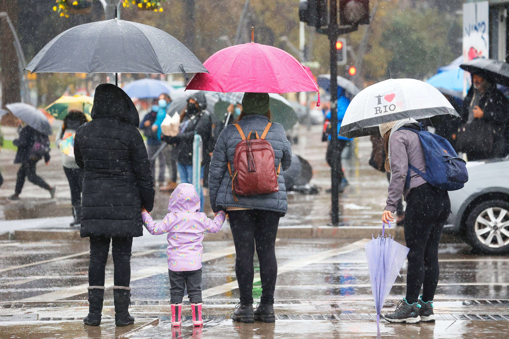
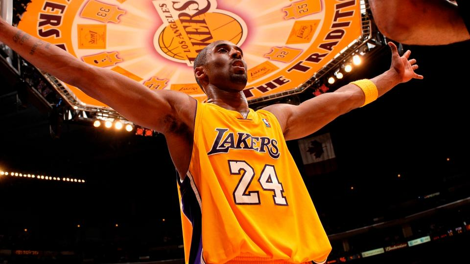

Noticias Destacadas
| Cambio de hora en Chile | Minutos de terror en Lo Valledor | Abril inicia con un nuevo sistema frontal |
|---|---|---|
 |
 |
 |
| El cambio de hora en Chile esta indicado
para el Sábado 6 de abril, quedan pocos días para que se haga efectivo el ajuste en los dispositivos. Solo en una región del país esto no se aplicará. Para saber más, lee la noticia completa en el enlace. Click |
Respecto al camarógrafo herido, se confirmó que el trabajador se encuentra estable y fuera de riesgo vital después de haber sido sometido a una intervención quirúrgica. Para saber más, lee la noticia completa en el enlace. Click |
Para esta semana está pronosticado un inminente ciclón que se caracterizará por la caída de fuertes precipitaciones y vientos de más de 100 km/h. Para saber más, lee la noticia completa en el enlace. Click |
Actualidad Deportiva
| Subastan anillo de Kobe Bryant | César Abaroa y Eber Sanhueza clasifican a París 2024 | "La U ya no tiene miedo" |
|---|---|---|
|  |  |
|
| La joya está elaborada en oro de 14 quilates, incorpora 40 diamantes y tiene un significado especial para los amantes del básquetbol. Para saber más, lee la noticia completa en el enlace. Click |
El binomio nacional consiguió su clasificación tras ganar
la final en el doble par ligero masculino y participará por segunda vez en la cita de los cinco anillos. Para saber más, lee la noticia completa en el enlace. Clik |
El exjugador y panelista de Los Tenores identificó
la principal fortaleza del equipo que dirige Gustavo Álvarez, que marcha puntero junto a Iquique. Para saber más, lee la noticia completa en el enlace. Click |
Actualidad Empresarial
| Tienda Corona pone fin a su tarjeta de crédito | Conoce tu deuda | Comenzó el Black Sale 2024 |
|---|---|---|
 |
 |
|
| Las perdidas en el 2023 fueron de mas de $6.000 millones. Los usuarios de las tarjetas ya fueron informados de la medida, los plazos de pago y las condiciones se mantendrán. Para saber más, lee la noticia completa en el enlace. Click |
La Comisión para el Mercado Financiero (CMF) tiene una herramienta muy útil que incluso da tips para ordenarse. Para saber más, lee la noticia completa en el enlace. Click |
La instancia de comercio electrónico está organizada
por los mismos organizadores del Black Friday. Conoce aquí cómo participar y cuáles son las categorías con descuentos. Para saber más, lee la noticia completa en el enlace. Click |
Video Juego Destacado
| STRAY |
|---|
| Perdido, solo y separado de su familia, un gato callejero debe
resolver un misterio ancestral para escapar de una ciudad caída en el olvido y encontrar el camino a casa. Juegalo ahora |